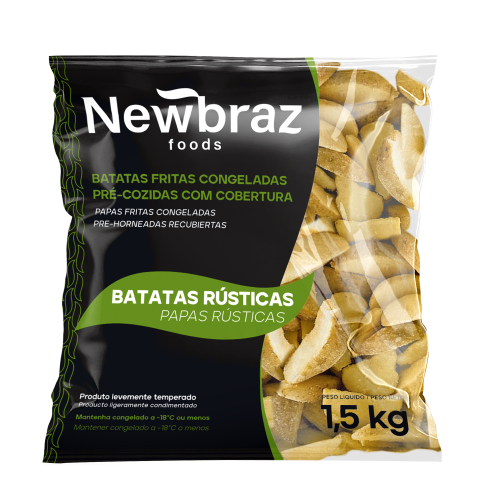

Batata Rústica Congelada

Peso: 1,5 kg
Descrição: Batatas fritas congeladas pré-cozidas com cobertura especial, no estilo rústico. Sabor caseiro com praticidade industrial, perfeita para quem busca um produto diferenciado.
Preparação: Pode ser frita ou assada diretamente congelada até ficar dourada e crocante.
Diferenciais: Formato irregular característico, crocância uniforme, pré-cozimento que reduz tempo de preparo.
Solicitar Orçamento